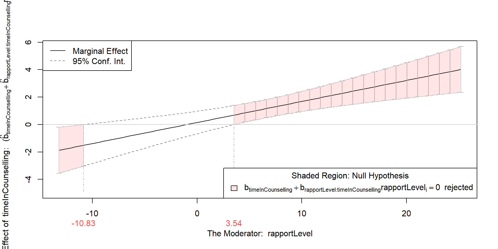

- 1
- This model does not include an interaction between timeInCounselling and rapportLevel. This is because we used the + symbol to separate the predictor variables.
- 2
- This model does include an interaction between timeInCounselling and rapportLevel. This is because we used the * symbol to separate the predictor variables.
Moderation Designs
DClin Research Methods 1
Dr Christopher Wilson
Teesside University
Recap
- Thinking about more than outcomes. Designing studies to answer more specific research questions / think about process.
- “Why is this happening?”
- “What is the mechanism?”
- Thinking beyond significance testing. Using confidence intervals and effect sizes to interpret results.
- “How big is the effect?”
- “What is the range of plausible values?”
- Thinking about the relationship between variables. Modelling relationships between variables using regression.
- “Does Predictor Variable (e.g. Treatment Group, Avoidance, Trait) predict Outcome Variable (e.g. Wellbeing, Depression, Behaviour)?”
- “How much variance is explained by the model?”
Last week and the week before
- Thinking about the relationship between variables. Modelling relationships between variables using regression.
- “Does Predictor Variable (e.g. Treatment Group, Avoidance, Trait) predict Outcome Variable (e.g. Wellbeing, Depression, Behaviour)?”
- “How much variance is explained by the model?”
We looked at building regression models based on our research questions and hypotheses.
This allowed us to consider the contribution of multiple predictors to an outcome variable.
Today
- Thinking about more than outcomes. Designing studies to answer more specific research questions / think about process.
- “Why is this happening?”
- “What is the mechanism?”
- We will be looking at how we can use regression to model interactions between variables.
- We will also be looking at how we can use regression to model moderation of relationships between variables.
What are interactions? #1
- Interactions are when the outcome variable is influenced by the interaction between two or more predictor variables.
For example, if we are looking at whether Time in counselling and Rapport level with clinician predict General Wellbeing.
Without the interaction, we consider the effect of Time in counselling or Rapport level with clinician on General Wellbeing.
With the interaction, we consider the effect of Time in counselling on General Wellbeing at different levels of Rapport level with clinician (or vice versa).
Note: All assumptions of multiple regression also apply to interactions and moderation.
How do we check for interactions?
We can check if there is an interaction between predictor variables when we build our regression model.
We do this by adding a term to our model that represents the interaction between the predictor variables.
Interpreting interactions in regression #1
Call:
lm(formula = generalWellbeing ~ timeInCounselling * rapportLevel,
data = modData)
Residuals:
Min 1Q Median 3Q Max
-17.497 -9.119 -0.234 6.125 37.896
Coefficients:
Estimate Std. Error t value Pr(>|t|)
(Intercept) 17.28817 3.14907 5.490 3.28e-07 ***
timeInCounselling 0.15174 0.41507 0.366 0.71548
rapportLevel -0.41300 0.30045 -1.375 0.17246
timeInCounselling:rapportLevel 0.15338 0.04031 3.805 0.00025 ***
---
Signif. codes: 0 '***' 0.001 '**' 0.01 '*' 0.05 '.' 0.1 ' ' 1
Residual standard error: 11.36 on 96 degrees of freedom
Multiple R-squared: 0.2763, Adjusted R-squared: 0.2537
F-statistic: 12.22 on 3 and 96 DF, p-value: 7.701e-07Interpreting interactions in regression #2
We can see that the overall model is significant
We can see that the interaction between timeInCounselling and rapportLevel is significant
We can see that the main effects of timeInCounselling and rapportLevel are not significant
In models where the interaction is significant, we should not interpret the main effects of the predictor variables (even when they are significant).
Interpreting interactions in regression #3
- We can look at the simple slopes of the interaction.

Interpreting interactions in regression #4
We can further test this interaction by calculating range of values where the interaction is significant.
We can do this using the
rockchalkpackage. We will do it our moderation example later.
Thinking about interactions
We can see that the relationship between timeInCounselling and generalWellbeing is different at different levels of rapportLevel.
This means that the variables are interacting with each other to predict the outcome variable.
Warning
If we plan to test for interactions, we need to make sure that we have enough power to do so. It is more than just adding another predictor, as interaction effects tend to be much weaker than main effects.
Moderation designs
What are moderation designs?
Moderation designs are when the relationship between two variables is moderated by a third variable.
This is similar to an interaction, but we are stating our theoretical model about the relationship between the variables in a more specific way.
For example, we might be interested in whether the relationship between Trait Anxiety and Depression is moderated by Avoidance.
We are specifically stating that we believe Trait Anxiety predicts Depression, but that their relationship is different at different levels of Avoidance.
So moderation is just an interaction effect?
Statistically, yes. Theoretically, no.
From a theory perspective, we are stating that we believe that the relationship between two variables is moderated by a third variable.
Diagram of moderation design
When should we use moderation designs?
We should use moderation designs when we have a theoretical reason to believe that the relationship between two variables is moderated by a third variable.
This should come from a good understanding of the literature and the theory behind the variables.
We should not use moderation designs “just to see what happens”. The statistical test alone does not prove the existence of the theoretical relationship.
How do we check for moderation?
The first step is to build a regression model that includes the main effects and the interaction between the two predictor variables (this is the same as interaction that we covered earlier).
If the interaction is significant, we can then visualise the interaction using simple slopes (same as what we did earlier).
We can then calculate the range of values of the moderator variable where the interaction is significant.
Moderation example
Let’s imagine that we theorise that the relationship between Time in counselling and General Wellbeing is moderated by Rapport level.
We want to know at which levels of Rapport level the relationship between Time in counselling and General Wellbeing is significant.
We also want to know the direction of the relationship between Time in counselling and General Wellbeing at different levels of Rapport level.
Moderation example #2
The regression model is the same as the one we used for interactions.
# model1 with interactions
1model1 <- lm(data = modData, generalWellbeing ~ timeInCounselling * rapportLevel)- 1
- This model includes an interaction between timeInCounselling and rapportLevel. We know this because we used the * symbol to separate the predictor variables.
Testing the moderation effect
Testing at which levels of Rapport level the relationship between Time in counselling and General Wellbeing is significant.
Step 1: Run the regression model:
Testing the moderation effect #2
Step 2: Plot the interaction:
# model1 with interactions
model1 <- lm(data = modData, generalWellbeing ~ timeInCounselling * rapportLevel)
# using the rockchalk package
library(rockchalk)
# use the plotSlopes() function
ps <- plotSlopes(model1, plotx = "timeInCounselling", modx = "rapportLevel", interval = "confidence", modxVals = "std.dev")$call
plotSlopes.lm(model = model1, plotx = "timeInCounselling", modx = "rapportLevel",
modxVals = "std.dev", interval = "confidence")
$newdata
timeInCounselling rapportLevel fit lwr upr
1 0.0000000 -2.64 18.37848 11.026008 25.73095
2 0.3846154 -2.64 18.28110 11.260845 25.30136
3 0.7692308 -2.64 18.18373 11.491611 24.87585
4 1.1538462 -2.64 18.08636 11.717677 24.45504
5 1.5384615 -2.64 17.98898 11.938290 24.03968
6 1.9230769 -2.64 17.89161 12.152542 23.63068
7 2.3076923 -2.64 17.79424 12.359341 23.22913
8 2.6923077 -2.64 17.69686 12.557361 22.83637
9 3.0769231 -2.64 17.59949 12.745000 22.45398
10 3.4615385 -2.64 17.50212 12.920322 22.08391
11 3.8461538 -2.64 17.40474 13.080993 21.72849
12 4.2307692 -2.64 17.30737 13.224237 21.39050
13 4.6153846 -2.64 17.20999 13.346794 21.07320
14 5.0000000 -2.64 17.11262 13.444943 20.78030
15 5.3846154 -2.64 17.01525 13.514590 20.51591
16 5.7692308 -2.64 16.91787 13.551490 20.28426
17 6.1538462 -2.64 16.82050 13.551607 20.08939
18 6.5384615 -2.64 16.72313 13.511587 19.93467
19 6.9230769 -2.64 16.62575 13.429271 19.82224
20 7.3076923 -2.64 16.52838 13.304065 19.75269
21 7.6923077 -2.64 16.43101 13.137056 19.72496
22 8.0769231 -2.64 16.33363 12.930810 19.73645
23 8.4615385 -2.64 16.23626 12.688938 19.78358
24 8.8461538 -2.64 16.13888 12.415585 19.86218
25 9.2307692 -2.64 16.04151 12.114982 19.96804
26 9.6153846 -2.64 15.94414 11.791127 20.09715
27 10.0000000 -2.64 15.84676 11.447610 20.24592
28 10.3846154 -2.64 15.74939 11.087544 20.41124
29 10.7692308 -2.64 15.65202 10.713570 20.59046
30 11.1538462 -2.64 15.55464 10.327895 20.78139
31 11.5384615 -2.64 15.45727 9.932351 20.98219
32 11.9230769 -2.64 15.35990 9.528451 21.19134
33 12.3076923 -2.64 15.26252 9.117446 21.40760
34 12.6923077 -2.64 15.16515 8.700369 21.62993
35 13.0769231 -2.64 15.06778 8.278078 21.85747
36 13.4615385 -2.64 14.97040 7.851288 22.08951
37 13.8461538 -2.64 14.87303 7.420594 22.32546
38 14.2307692 -2.64 14.77565 6.986498 22.56481
39 14.6153846 -2.64 14.67828 6.549423 22.80714
40 15.0000000 -2.64 14.58091 6.109726 23.05209
41 0.0000000 4.94 15.24797 10.313337 20.18259
42 0.3846154 4.94 15.59774 10.890307 20.30518
43 0.7692308 4.94 15.94752 11.463997 20.43104
44 1.1538462 4.94 16.29730 12.033890 20.56070
45 1.5384615 4.94 16.64707 12.599367 20.69478
46 1.9230769 4.94 16.99685 13.159683 20.83402
47 2.3076923 4.94 17.34663 13.713941 20.97931
48 2.6923077 4.94 17.69640 14.261057 21.13175
49 3.0769231 4.94 18.04618 14.799731 21.29263
50 3.4615385 4.94 18.39596 15.328402 21.46351
51 3.8461538 4.94 18.74573 15.845218 21.64625
52 4.2307692 4.94 19.09551 16.348017 21.84300
53 4.6153846 4.94 19.44529 16.834332 22.05624
54 5.0000000 4.94 19.79506 17.301455 22.28867
55 5.3846154 4.94 20.14484 17.746566 22.54311
56 5.7692308 4.94 20.49462 18.166961 22.82227
57 6.1538462 4.94 20.84439 18.560343 23.12844
58 6.5384615 4.94 21.19417 18.925157 23.46318
59 6.9230769 4.94 21.54395 19.260837 23.82706
60 7.3076923 4.94 21.89372 19.567913 24.21953
61 7.6923077 4.94 22.24350 19.847914 24.63909
62 8.0769231 4.94 22.59328 20.103115 25.08344
63 8.4615385 4.94 22.94305 20.336214 25.54989
64 8.8461538 4.94 23.29283 20.550030 26.03563
65 9.2307692 4.94 23.64261 20.747278 26.53794
66 9.6153846 4.94 23.99238 20.930434 27.05433
67 10.0000000 4.94 24.34216 21.101670 27.58265
68 10.3846154 4.94 24.69194 21.262847 28.12103
69 10.7692308 4.94 25.04171 21.415536 28.66789
70 11.1538462 4.94 25.39149 21.561045 29.22194
71 11.5384615 4.94 25.74127 21.700464 29.78207
72 11.9230769 4.94 26.09104 21.834695 30.34739
73 12.3076923 4.94 26.44082 21.964488 30.91715
74 12.6923077 4.94 26.79060 22.090466 31.49073
75 13.0769231 4.94 27.14037 22.213148 32.06760
76 13.4615385 4.94 27.49015 22.332971 32.64733
77 13.8461538 4.94 27.83993 22.450300 33.22956
78 14.2307692 4.94 28.18970 22.565444 33.81397
79 14.6153846 4.94 28.53948 22.678665 34.40030
80 15.0000000 4.94 28.88926 22.790188 34.98833
81 0.0000000 12.52 12.11745 6.158021 18.07688
82 0.3846154 12.52 12.91438 7.224345 18.60441
83 0.7692308 12.52 13.71131 8.284898 19.13772
84 1.1538462 12.52 14.50823 9.338797 19.67767
85 1.5384615 12.52 15.30516 10.385000 20.22532
86 1.9230769 12.52 16.10209 11.422277 20.78190
87 2.3076923 12.52 16.89902 12.449180 21.34885
88 2.6923077 12.52 17.69594 13.464019 21.92787
89 3.0769231 12.52 18.49287 14.464835 22.52090
90 3.4615385 12.52 19.28980 15.449394 23.13020
91 3.8461538 12.52 20.08672 16.415202 23.75824
92 4.2307692 12.52 20.88365 17.359564 24.40774
93 4.6153846 12.52 21.68058 18.279688 25.08147
94 5.0000000 12.52 22.47750 19.172862 25.78215
95 5.3846154 12.52 23.27443 20.036683 26.51218
96 5.7692308 12.52 24.07136 20.869310 27.27341
97 6.1538462 12.52 24.86829 21.669699 28.06687
98 6.5384615 12.52 25.66521 22.437745 28.89268
99 6.9230769 12.52 26.46214 23.174302 29.74998
100 7.3076923 12.52 27.25907 23.881056 30.63708
101 7.6923077 12.52 28.05599 24.560314 31.55168
102 8.0769231 12.52 28.85292 25.214742 32.49110
103 8.4615385 12.52 29.64985 25.847131 33.45257
104 8.8461538 12.52 30.44678 26.460208 34.43334
105 9.2307692 12.52 31.24370 27.056518 35.43089
106 9.6153846 12.52 32.04063 27.638350 36.44291
107 10.0000000 12.52 32.83756 28.207724 37.46739
108 10.3846154 12.52 33.63448 28.766385 38.50258
109 10.7692308 12.52 34.43141 29.315830 39.54699
110 11.1538462 12.52 35.22834 29.857333 40.59934
111 11.5384615 12.52 36.02527 30.391975 41.65856
112 11.9230769 12.52 36.82219 30.920669 42.72372
113 12.3076923 12.52 37.61912 31.444191 43.79405
114 12.6923077 12.52 38.41605 31.963199 44.86889
115 13.0769231 12.52 39.21297 32.478251 45.94770
116 13.4615385 12.52 40.00990 32.989824 47.02998
117 13.8461538 12.52 40.80683 33.498325 48.11533
118 14.2307692 12.52 41.60376 34.004104 49.20341
119 14.6153846 12.52 42.40068 34.507462 50.29390
120 15.0000000 12.52 43.19761 35.008660 51.38656
$modxVals
(m-sd) (m) (m+sd)
-2.64 4.94 12.52
$col
(m-sd) (m) (m+sd)
"black" "blue" "darkgreen"
$lty
(m-sd) (m) (m+sd)
1 2 3
$fancy
$fancy$col
(m-sd) (m) (m+sd)
"black" "blue" "darkgreen"
$fancy$lty
(m-sd) (m) (m+sd)
1 2 3
$fancy$lwd
(m-sd) (m) (m+sd)
2 2 2
attr(,"class")
[1] "plotSlopes" "rockchalk" Testing the moderation effect #3
Step 3: Test the range of values where the interaction is significant:
# model1 with interactions
model1 <- lm(data = modData, generalWellbeing ~ timeInCounselling * rapportLevel)
# using the rockchalk package
library(rockchalk)
# use the plotSlopes() function
ps <- plotSlopes(model1, plotx = "timeInCounselling", modx = "rapportLevel", interval = "confidence", modxVals = "std.dev") Values of rapportLevel OUTSIDE this interval:
lo hi
-10.828550 3.537184
cause the slope of (b1 + b2*rapportLevel)timeInCounselling to be statistically significant
Testing the moderation effect #4
Step 4: Visualise the results:
# model1 with interactions
model1 <- lm(data = modData, generalWellbeing ~ timeInCounselling * rapportLevel)
# using the rockchalk package
library(rockchalk)
# use the plotSlopes() function
ps <- plotSlopes(model1, plotx = "timeInCounselling", modx = "rapportLevel", interval = "confidence", modxVals = "std.dev")
Values of rapportLevel OUTSIDE this interval:
lo hi
-10.828550 3.537184
cause the slope of (b1 + b2*rapportLevel)timeInCounselling to be statistically significant
How do we interpret the moderation effect?
We can see that the relationship between Time in counselling and General Wellbeing is significant levels of Rapport level outside of -10.8 and 3.54.
However, the Rapport level scale does not actually go below 0. So we can say that the relationship between Time in counselling and General Wellbeing is significant when Rapport level is above 3.54.
We can look at the first interaction plot to see the direction of the relationship between Time in counselling and General Wellbeing at increasing levels of Rapport level.
Summary
We can use regression to model interactions between predictor variables.
We can also use regression to model moderation of relationships between predictor variables.
Moderations are just a specific type of interaction. They are based on specific theoretical models about the relationship between variables.
We can use the
rockchalkpackage to test for interactions and moderation and plot them.